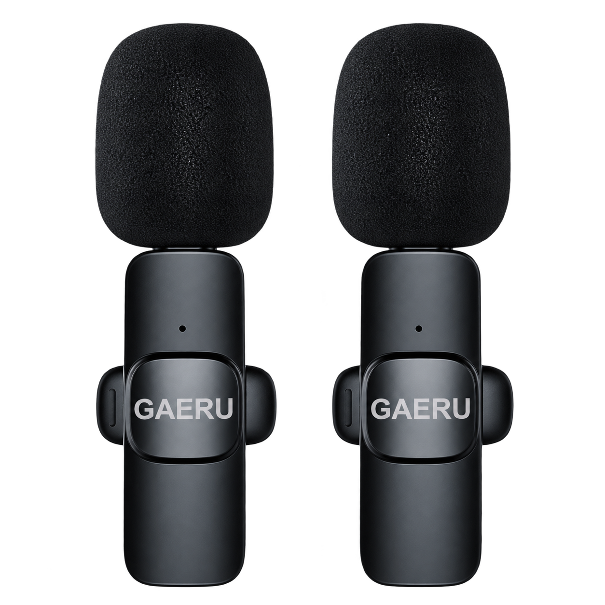
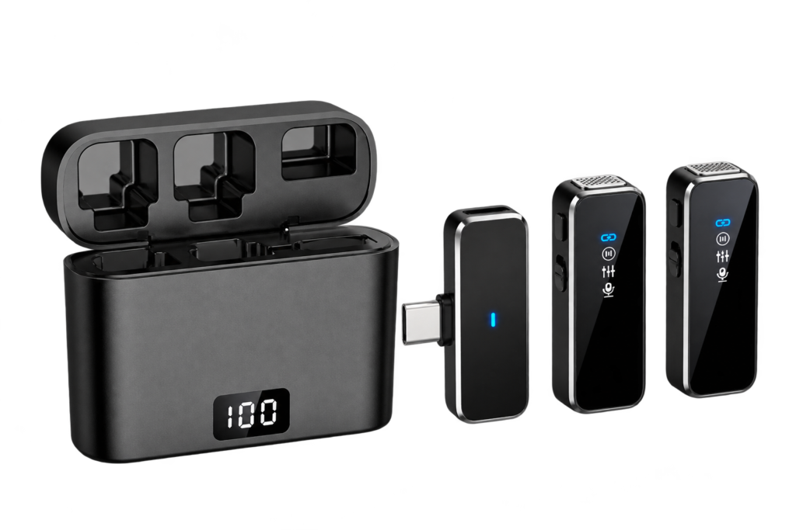
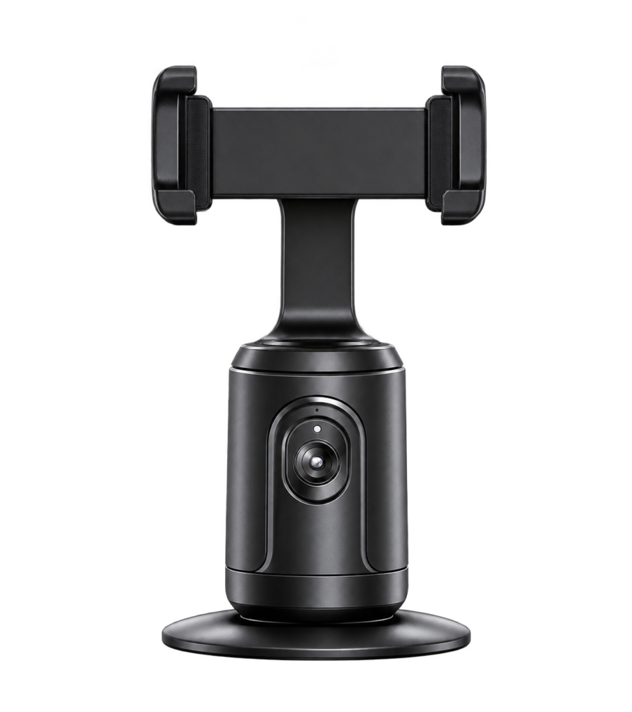
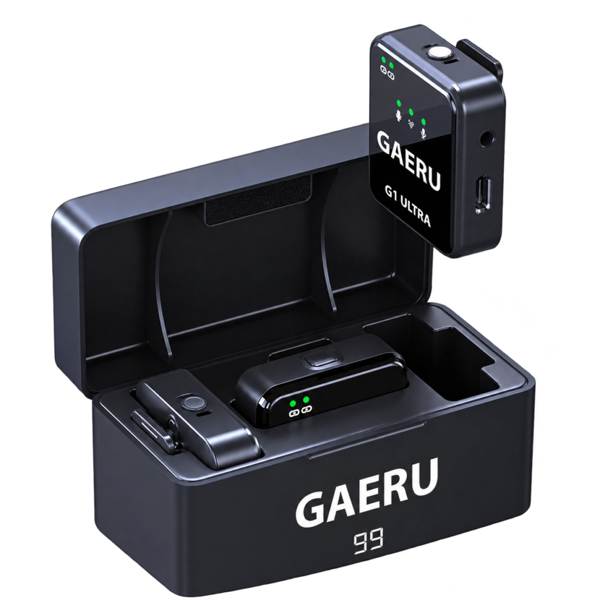

HƯỚNG DẪN SỬ DỤNG
Bắt đầu đúng.
Sáng tạo dễ dàng.
Chọn sản phẩm của bạn để xem cách thiết lập, kiểm tra và xử lý những vấn đề thường gặp.
Bạn đang sử dụng sản phẩm nào?

MICRO KHÔNG DÂY
GAERU K9
Kết nối đầu thu, kiểm tra nguồn âm và thu thử trước khi quay video.
Đọc hướng dẫn ↗
MICRO CÓ HỘP SẠC
GAERU M3
Chuẩn bị micro từ hộp sạc và kiểm tra từng nguồn âm trước buổi ghi hình.
Đọc hướng dẫn ↗
GIÁ ĐỠ ĐIỆN THOẠI
GAERU P01
Lắp điện thoại chắc chắn, chọn khung hình và thử hoạt động trước khi quay.
Đọc hướng dẫn ↗
MICRO KHÔNG DÂY
GAERU G1 ULTRA
Chọn đúng đường âm thanh và kiểm tra mức thu trên thiết bị ghi hình.
Đọc hướng dẫn ↗